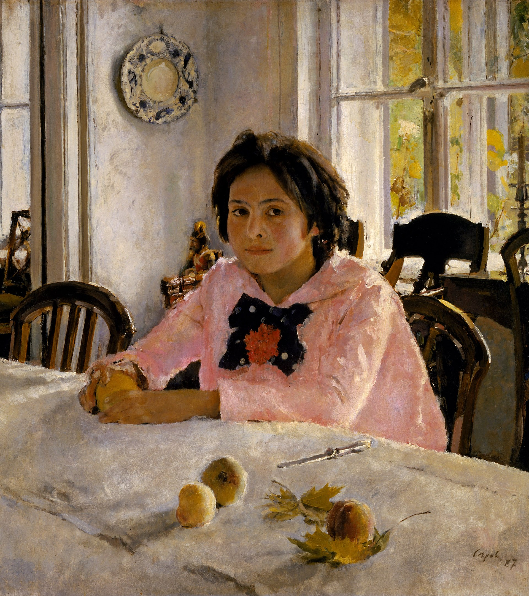

Валентин Александрович Серов (1865-1911) был русским художником и одним из наиболее известных представителей российского искусства конца 19-начала 20 веков. Он прошел путь от реализма до импрессионизма и постимпрессионизма, оставив значительный след в искусстве. Родился в Санкт-Петербурге в семье известного композитора Александра Николаевича Серова. В 1880 году поступил в Академию художеств, где его наставниками были И. И. Шишкин и И. Е. Репин. В 1894 году стал академиком и в 1900 году был избран профессором Академии художеств.
Самые известные работы Серова - это портреты. Он был мастером в создании выразительных портретов, которые отражали не только внешность модели, но и ее характер и внутренний мир. Одной из самых известных работ является портрет "Девушка с персиками" (1887), который стал символом русского импрессионизма. Также стоит отметить портреты М. М. Бехтеревой, И. П. Шуваловой, Г. Рябушинской и других выдающихся личностей того времени.
Валентин Серов умер в возрасте 46 лет, оставив после себя наследие, которое вдохновляет художников по сей день. Его работы можно увидеть в Русском музее, Третьяковской галерее, Государственном Эрмитаже и других музеях России. Также многие картины Серова находятся в частных коллекциях и приватных музеях по всему миру.
На сайте использована информация из открытых источников. Сделано в 2023 году.